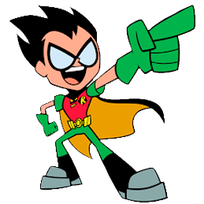
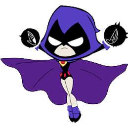
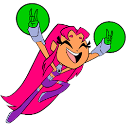
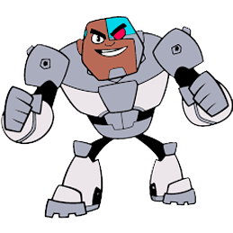
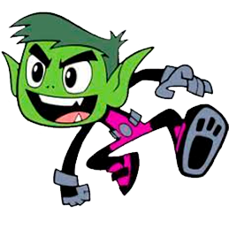

-
Robin
Líder
Descrição
Robin foi criado para trazer um personagem alegre e colorido às histórias escuras e sombrias do Batman. Os criadores também imaginavam que seria útil haver alguém com quem Batman conversar em suas aventuras (em vez de viver pensando ou conversando sozinho). Robin foi o primeiro exemplo de sidekick nas histórias em quadrinhos, isto é, a ideia de um parceiro infantil para um super-herói adulto, objetivando aproximar o público infantil de leitores do personagem principal. Após a criação e sucesso do Robin, surgiram outros sidekicks para vários heróis como Ricardito, para ser o parceiro-mirim do Arqueiro Verde, Bucky (Marvel Comics), para o Capitão América, e até mesmo levando a transformar Jimmy Olsen no sidekick do Superman anos mais tarde.
-
Ravena
Rainha das Trevas
Descrição
Ravena foi criada para complementar os Jovens Titãs, além disso, todos queriam que ela se tornasse uma espécie de destaque na equipe, pois algo faltava para completar esse pequeno time. Seus criadores, chamados George Pérez e Marv Wolfman, queriam uma heroína diferente, sendo essa parecida com um corvo, aliás, almejavam sua aparência um tanto sombria, justamente para despertar a curiosidade dos fãs da DC, pensando nisso, os dois fizeram a ilustração semelhante a dos corvos, principalmente sua cabeça. Ademais, a roupa da personagem era um tanto peculiar. Como os desenvolvedores afirmam: "não eram adaptadas para combate". Pelos fatos mostrados, Ravena caiu no gosto do público, principalmente pelos jovens, os quais a consideram peça importante nos Jovens Titãs e nas histórias em quadrinhos da DC Comics.
-
Estelar
Princesa
Descrição
Estelar era extremamente gentil e inocente, mas quando ameaçada reagia violentamente, com uma fúria que precisava ser contida por Dick. Tem a pele dourada e os olhos verdes, como todos os Tamaraneanos. Ela é alta e seu traje em tons de roxo e violeta deixa grande parte de seu corpo à mostra. Antes do evento chamado Crise Infinita, Estelar estava atuando nos Renegados.
-
Cyborg
Homem-Robô
Descrição
Cyborg, inconscientemente, teve os planos de construção de sua cibernética copiada pelo Sangue, que os usou para construir novas super-armadilhas. Indignado, o Cyborg declarou uma vingança pessoal no sangue e confrontou-o pessoalmente quando tentou empregar um gigantesco canhão sônico de uma base submarina. No entanto, as habilidades de artes marciais do sangue conseguiram o melhor dele, e ele ganhou apenas com a assistência de Abelha, que estava naquela época infiltrando o H.I.V.E. com a ajuda de Aqualad. Para perseguir o sangue e outros supervilões de forma mais eficiente, Cyborg ajudou Abelha e Aqualad a estabelecer e equipar um ramo oriental dos Titãs, com Ricardito e Más y Menos juntando-se às fileiras. Logo eles foram atacados por Sangue e um exército de robôs modelados por Cyborg, mas aparentemente conseguiram repelir todos eles. Conheceu uma proposta para permanecer e se tornar o líder dos Titãs da Costa Leste, o Cyborg decidiu ficar com seu novo time.
-
Mutano
Meta-Humano
Descrição
Os pais de Mutano, Marie e Mark Logan eram geneticistas, e viajavam pelo mundo inteiro estudando os mais variados animais. Um dia os três estavam na Alta Lamumba, África, no meio da floresta. Com os pais de Mutano estava o Doutor Samuel Register, que reclamava da bagunça que ele cometia e pediu um pouco de paz. A mãe de Garfield Logan - o nome verdadeiro de Mutano - então foi para fora do laboratório trocar o óleo de seu jipe, e Garfield foi junto. Quando chegou, escutou um barulho em uma árvore e foi observar o que havia lá. Quando se aproximou viu um macaco verde de uma espécie rara chamada cercocebus viridis, que o mordeu e fez ele contrair uma rara doença chamada sakutia, a febre verde, e quem contraísse esta doença morreria em 48 horas. O pai de Garfield conseguiu salvá-lo, mas o garoto ficou com a pele verde e adquiriu o dom de se transformar em qualquer animal, sempre com a cor esverdeada. Assumindo o nome de Rapaz-fera, ele foi adotado por Steve Dayton e Rita Farr, atuando algum tempo ao lado deles na Patrulha do Destino. Mais tarde, já com o nome Mutano, afiliou-se aos Jovens Titãs. Posteriormente, os integrantes do grupo se separaram e retornaram com o nome de Novos Titans com a ausência de Dick Grayson (agora sendo Asa Noturna), Donna Troy, Wally West e mais tarde, de Koriander (Estelar). Depois de alguns anos o grupo "Novos Titãs" mudou o nome para "Titãs" onde trabalha até os dias atuais.